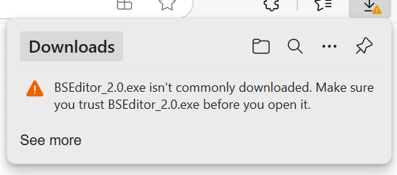
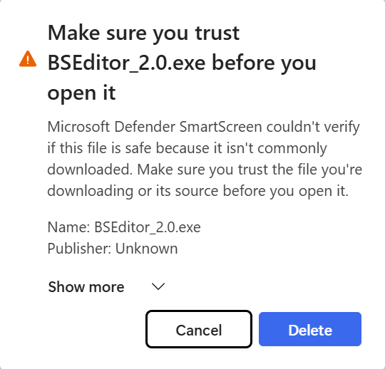

2. Installation
2.1 MacOS
After downloading the DMG file, double-click it to mount the volume. It
contains a PKG file (the installer), and a quick start PDF document.

Double-click the pkg file, and go through a standard MacOS installation
procedure; you may need to type the system's password to proceed (this is
so that the software can be installed in your Applications folder). Once
the installation is complete, you can choose to remove the installer from
your machine.
2.2 Windows
Windows software certification is pending. For now, you can download the
Windows installer from the BSGenerator website. If using Edge, you may need to
allow the download to proceed: press the ... button in the top right
corner, and choose ``Keep'':

You may need to again confirm the download. Press Show more and then
Keep anyway:

Open the downloaded file to start the installer. Depending on your security
settings, you may need to again confirm the installation. Then follow the
installation process (for better results, stick to default choices).
2.3 Uninstall
BSGenerator does not provide a specific uninstall, so you can use the standard
uninstalling procedure for your operating system:
- For Windows, go to the main Windows "Settings" application, then choose
"Apps", "Apps & features"; then click the triple verticals dots next to
BSGenerator, and choose "Uninstall".
- For MacOS, head over to "Applications", and just drag the BSGenerator icon
to the recycle bin.